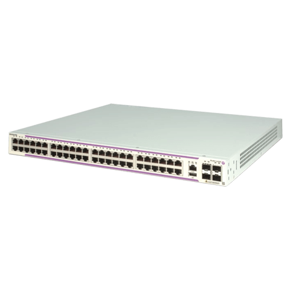

OmniSwitch 6350 Access Switch¶
Fixed-configuration GigE stackable LAN switches that are easy to manage and designed for your small business.
Create the high-performance network you need for your small business. The Alcatel-Lucent OmniSwitch 6350 excels at delivering bandwidth-intensive applications while consuming very little power. Its network capabilities include advanced security, quality of service - and like all our enterprise switches, they’re simple to deploy, configure and manage.
Featuring the latest technology innovations, the OmniSwitch 6350 family of switches also helps you protect your investment into the future thanks to a range of flexible upgrade options.
{kind=link}
- 24-port and 48-port models with GigE RJ45 access and up to 4 GigE SFP uplinks
- 10 port models with GigE RJ45 access and 2 GigE RJ45/SFP combo uplink ports
- PoE/PoE+ support via 8/24/48 auto-sensing Gigabit RJ45 access ports with dynamic PoE allocation
- Zero-touch configuration
- Basic L3 routing: IPv4 and IPv6
- Access security and policy enforcement
For datasheet click here